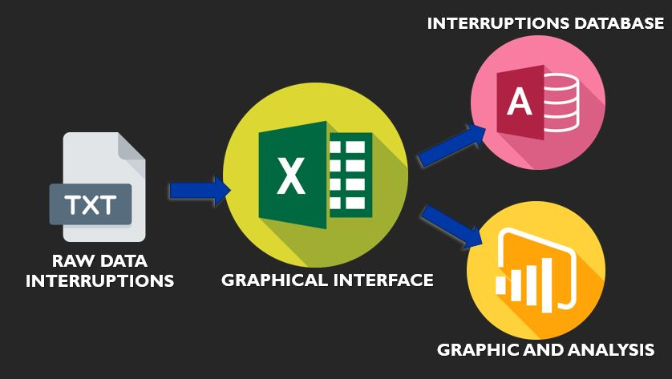

SAIDI analysis
According to the IEEE, the SAIDI is a quality indicator that measures the average of interruptions perceived by a user connected to the power distribution system.
The analysis carried out was focused on the Bogota area with the data provided by the company Enel-Codensa, as part of my internship project. The exercise was done with the use of Power BI, Ms Acces and Visual Basic for Applications software that allowed the incorporation of an interface to aid interaction with the data. The process consisted of a first stage of data collection and information separation. Then, I focused on a way to collect that data in Excel and there filter those that had interruptions of less than 3 minutes and separate the interruptions by zone, cause and number of users. All this information was connected to a database created in Ms Access.
Then, as a final part, a Power BI projection of the SAIDI calculated for the top 10 circuits with the highest SAIDI is made. As an additional note, the interruptions data were also compared with the data from rainfall statistics and precipitation levels. Thus, it was possible to find which circuits in the Bogota area are most affected in times of rain and thus be able to focus on a prevention plan for such circuits.